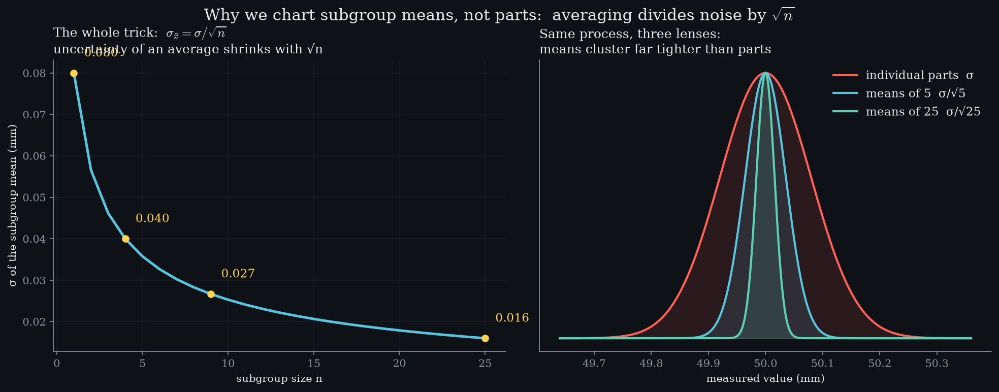

Level 4 · chapter four
Variation is predictable
One part is noise. Many parts are information.
after Level 3 — centre and spread·leads to Level 6 — limits are a hypothesis test
One part tells you nothing
One part tells you almost nothing; many parts obey a law. predictable in bulk10 rolls200 % off10 000 rollsa few % offStart with the simplest part there is — one die, six faces, all equally likely. Ten rolls tell you nothing: the worst face is out by two hundred percent.
Keep rolling and watch that distance close. spoken · 0:28“Nobody arranged that. It is what randomness does in bulk.”At ten thousand rolls the worst face is within a few percent of one sixth. Nobody arranged that; it is what randomness does in bulk.
Averaging makes a shape
One die is the baseline: every face equally likely, no shape at all. the pointNothing about a die is bell shaped. The averaging did this.Average two of them and the flat top is already gone. Average five, and there is a shape where there was none. Thirty, and it is a bell.
That matters because nothing about a die is bell shaped. The shape did not come from the parts; it came from averaging them.

The law
Two numbers, measured separately, agree to three decimals: the spread of the averages, and one die's spread divided by the root of the count. measured, not assumedagreement3 decimalsThat agreement is the law, and it is the reason a control chart can exist at all.
The standard error. Average n parts and the spread of that average shrinks by the square root of n.
What averaging buys
Put subgroup size along the bottom and the spread of the mean up the side, with sigma set to one, then walk the subgroup size from one to twenty-five. the shape of the deal2nd part buyshalf the error25th part buys0.004 σAt twenty-five parts the spread of the mean is a fifth of one part's spread — the root is doing all the work.
But look at the shape of what you are buying. The second part halves your uncertainty; the twenty-fifth buys four thousandths of a sigma. Averaging is cheap at the start and almost free of value at the end, which is why subgroups of four and five are everywhere and subgroups of fifty are not.
It is also why a control chart plots subgroup means rather than parts: a shift that hides inside single measurements moves a mean far enough to see.spoken · 2:04“A shift that hides inside single parts moves a mean far enough to see.”
